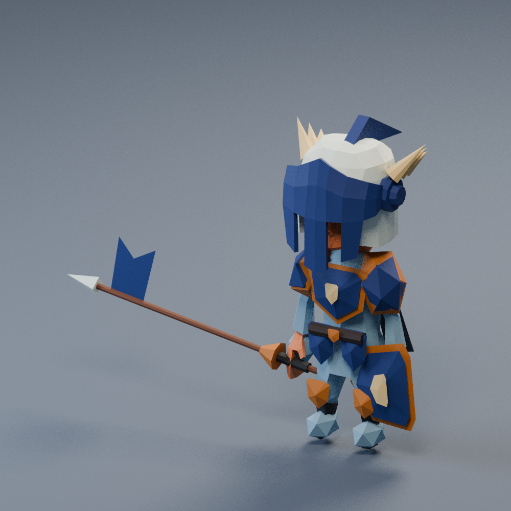
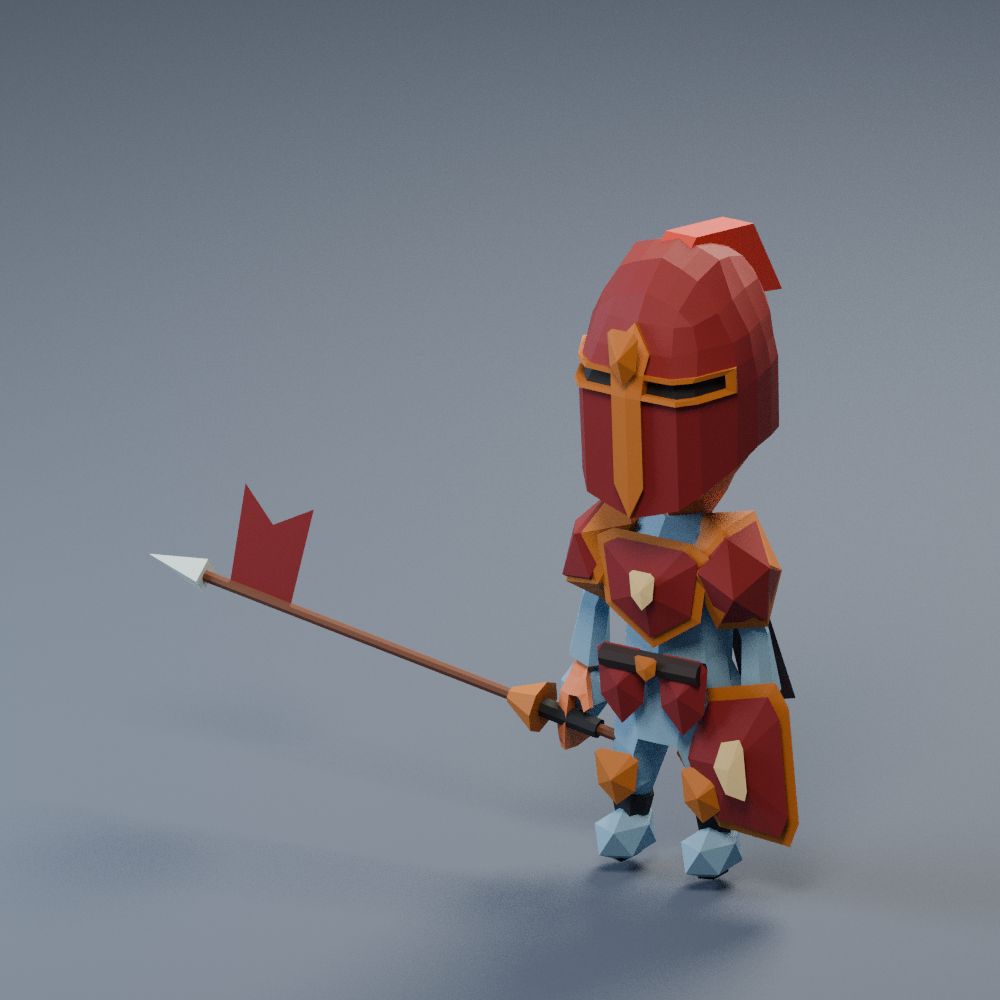
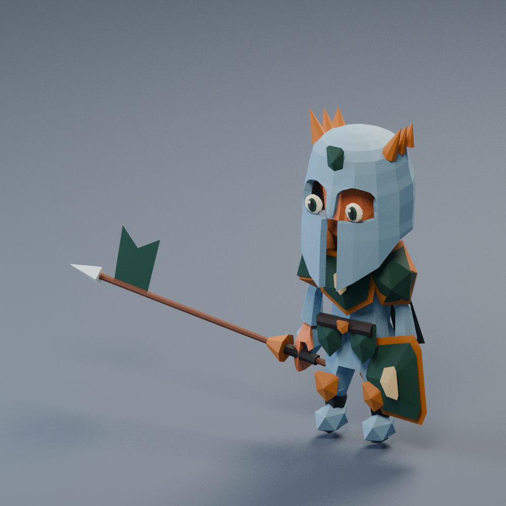
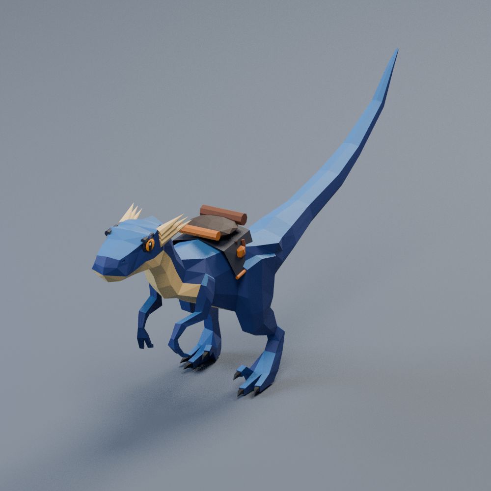
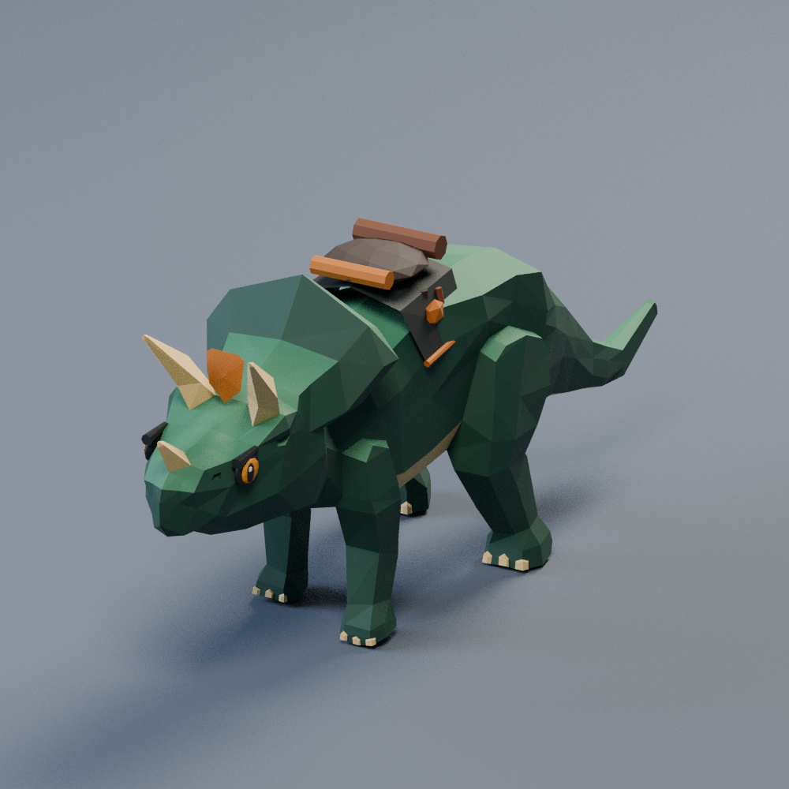
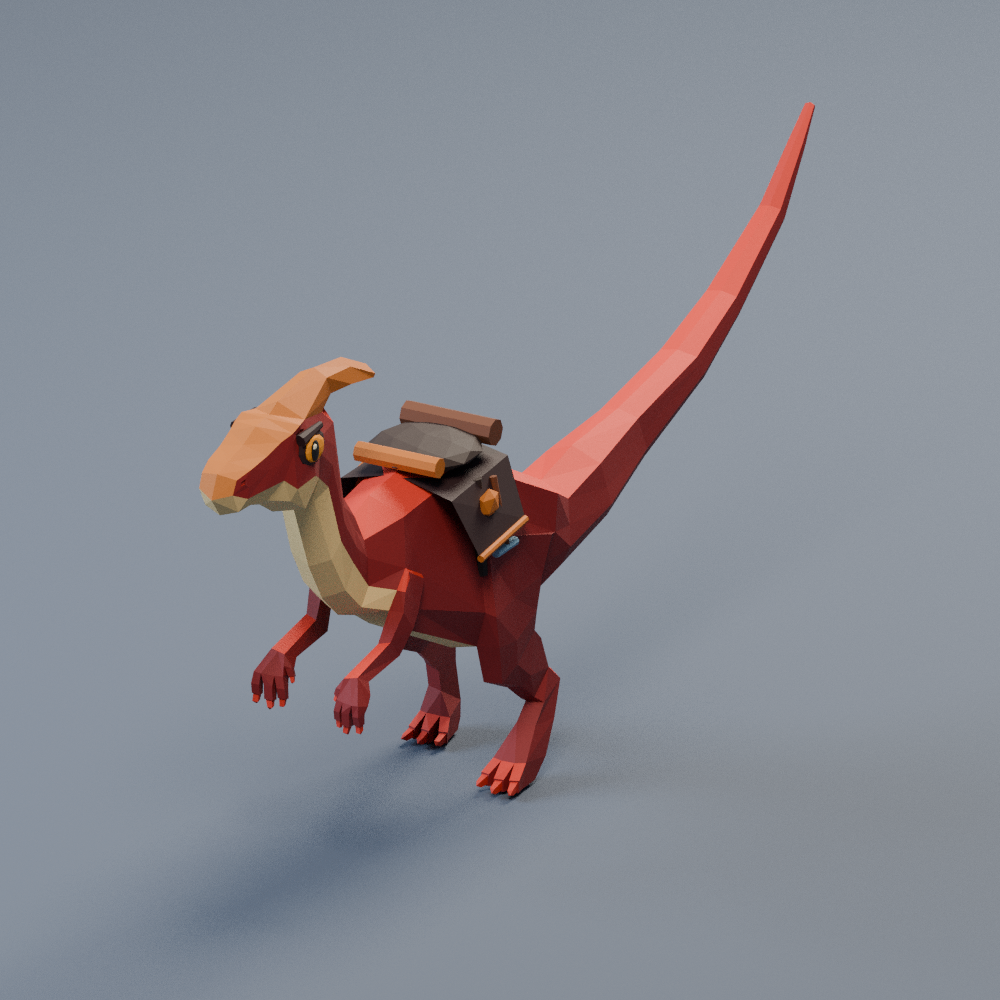

 Azure Lancer1,986 source triangles · 31 bones · 12 clips FrontSideBack Download GLB ↓Blender source ↓
 Crimson Champion2,001 source triangles · 31 bones · 12 clips FrontSideBack Download GLB ↓Blender source ↓
 Jade Warden2,585 source triangles · 31 bones · 12 clips FrontSideBack Download GLB ↓Blender source ↓
 Velociraptor2,316 source triangles · 29 bones · 6 clips FrontSideBack Download GLB ↓Blender source ↓
 Triceratops2,325 source triangles · 29 bones · 6 clips FrontSideBack Download GLB ↓Blender source ↓
 Parasaurolophus2,398 source triangles · 29 bones · 6 clips FrontSideBack Download GLB ↓Blender source ↓